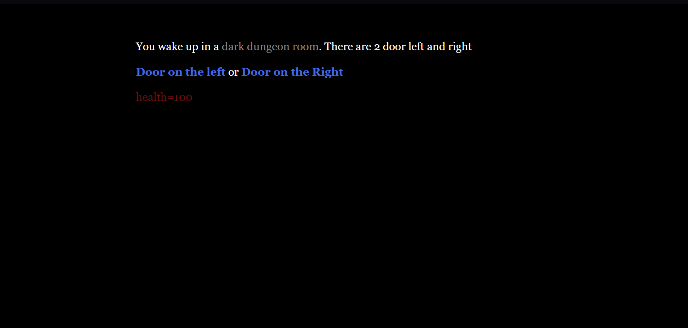
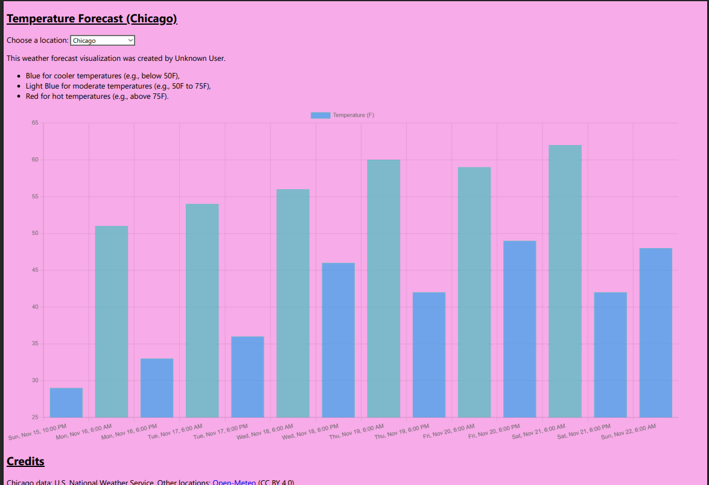
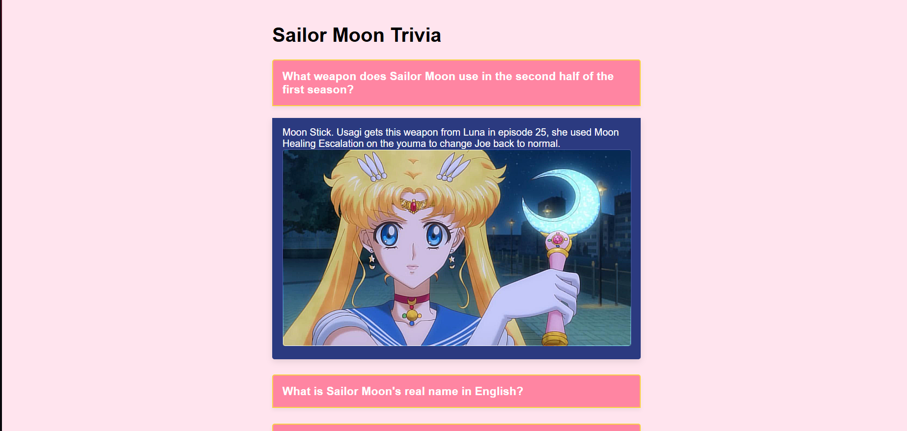

Coding Portfolio
Below are projects from my coding class by Antonio Marshall. They show how I plan, build, test and improve interactive programs, from a branching story to web pages to animated art.
Interactive Fiction (Twine)
Twine: A Dungeon Escape

A text adventure where you wake up locked in a dungeon and have to find a way out. Each choice leads to a new passage, and some paths end in escape while others end in death. I planned the story as a map of passages first, then wrote and linked them in Twine.
Try it: Dungeon Escape ·
Technologies Used
Twine
Key Skills Demonstrated
- Branching story design
- Planning with a story map
- Linking passages and testing every path
- Writing for an interactive audience
Interactive Web Applications
Temperature Forecast Data Visualisation

A page that turns forecast temperatures into a visual display that is easy to scan. I used jQuery to read the data and build the page elements, and CSS to style the display so that higher and lower temperatures are easy to tell apart.
Try it: Temperature Forecast ·
Technologies Used
HTML5, CSS3, jQuery
Key Skills Demonstrated
- Data visualisation
- jQuery DOM manipulation
- Working with data sets
- CSS styling and layout
Sailor Moon Trivia

A trivia page where each question can be clicked to show or hide its answer. I wrote the show/hide behaviour in JavaScript and styled the page with CSS so it is clear which questions are open.
Try it: Sailor Moon Trivia ·
Technologies Used
HTML5, CSS3, JavaScript
Key Skills Demonstrated
- Semantic HTML structure
- JavaScript event handling
- Showing and hiding content
- CSS styling and visual feedback
Creative Coding (Processing)
Fireworks

A Processing sketch that launches fireworks into a night sky. Each firework bursts into many particles that move outward, fall and fade away. I used objects and arrays to keep track of every particle.
Technologies Used
Processing (a Java-based language)
Key Skills Demonstrated
- Animation and frame-rate control
- Randomisation and colour
- Arrays and loops
- Objects and custom functions